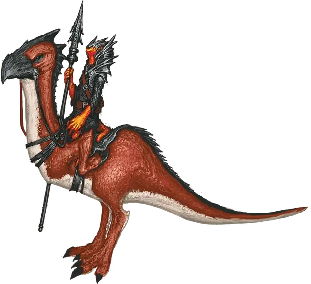

Гигантский ходун
Giant Strider
Большой Монстр, нейтрально-злой

Класс Доспеха 14 (природный доспех)
Хиты 22 (3к10 + 6)
Скорость 50 футов
| мод | спас | ||
|---|---|---|---|
| СИЛ | 18 | +4 | +4 |
| ЛОВ | 13 | +1 | +1 |
| ТЕЛ | 14 | +2 | +2 |
| мод | спас | ||
|---|---|---|---|
| ИНТ | 4 | −3 | −3 |
| МДР | 12 | +1 | +1 |
| ХАР | 6 | −2 | −2 |
Иммунитет к урону огонь
Чувства пассивное Восприятие 11
Опасность 1 (200 опыта)
Бонус мастерства +2
Среда обитания Болото, Горы, Подземье
Особенности
Впитывание огня. . Когда гигантский ходун должен получить урон огнём, он не получает урона, а восстанавливает хиты в количестве, равном половине этого урона огнём.
Действия
Укус. . Рукопашная атака оружием: +6 к попаданию, досягаемость 5 футов, одна цель. Попадание: 8 (1к8 + 4) колющего урона.
Огненный взрыв (Перезарядка 5–6). Гигантский ходун запускает сгусток огня в точку, которую может видеть, не далее 60 футов от себя. Каждое существо в сфере радиусом 10 футов с центром в этой точке должно совершить спасбросок Ловкости Сл 12 и получить 14 (4к6) урона огнём при провале или половину этого урона при успехе. Огонь распространяясь огибает углы и поджигает возгораемые объекты в этой области, которые ни на ком не надеты и никто не несет.
Описание
См. дополнительно статью: "Бестиарий: Огненные тритоны"